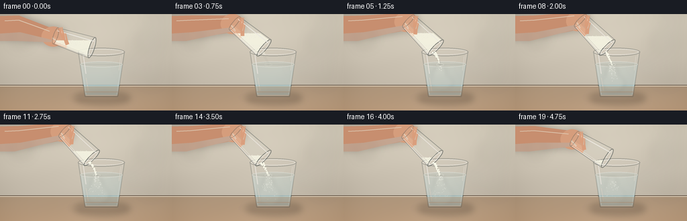
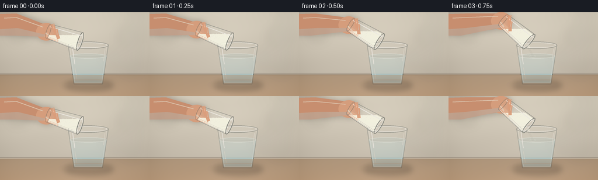
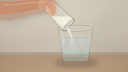

CODING AGENTS AS PIXEL WORLD MODELS
traex/GPT-5.6-Sol · material_0017
点击播放 · 原生 RGB 像素
逐轮保存的候选
回放视频、检查图与代码变化。
每份候选均可单独播放。实际图片检查记录在下方工具轨迹中。
候选 01播放与检查图
点击播放 · 原生 RGB 像素


展开代码变化
--- 上一保存版本
+++ 本次保存版本
@@ -0,0 +1,314 @@
+from pathlib import Path
+import math
+import numpy as np
+from PIL import Image, ImageDraw, ImageFilter
+import artifact_io
+
+W, H, N, FPS = 256, 144, 20, 4.0
+S = 4
+WS, HS = W*S, H*S
+rng = np.random.default_rng(91724)
+
+
+def sc(v):
+ return int(round(v*S))
+
+def pts(seq):
+ return [(sc(x), sc(y)) for x, y in seq]
+
+def ellipse(draw, box, fill=None, outline=None, width=1):
+ draw.ellipse(tuple(sc(x) for x in box), fill=fill, outline=outline, width=max(1, sc(width)))
+
+def line(draw, seq, fill, width=1, joint='curve'):
+ draw.line(pts(seq), fill=fill, width=max(1, sc(width)), joint=joint)
+
+def polygon(draw, seq, fill):
+ draw.polygon(pts(seq), fill=fill)
+
+def smoothstep(a, b, x):
+ if a == b:
+ return float(x >= b)
+ z = np.clip((x-a)/(b-a), 0, 1)
+ return float(z*z*(3-2*z))
+
+def oval_points(c, u, p, half_width, half_depth, n=40):
+ out = []
+ for k in range(n):
+ a = 2*math.pi*k/n
+ out.append((c[0] + p[0]*half_width*math.cos(a) + u[0]*half_depth*math.sin(a),
+ c[1] + p[1]*half_width*math.cos(a) + u[1]*half_depth*math.sin(a)))
+ return out
+
+def bezier(p0,p1,p2,p3,n=30):
+ out=[]
+ for z in np.linspace(0,1,n):
+ q=1-z
+ out.append((q**3*p0[0]+3*q*q*z*p1[0]+3*q*z*z*p2[0]+z**3*p3[0],
+ q**3*p0[1]+3*q*q*z*p1[1]+3*q*z*z*p2[1]+z**3*p3[1]))
+ return out
+
+# Stable particle parameters; particles move, rather than respawn randomly each frame.
+stream_particles = []
+for i in range(180):
+ start = 0.58 + (i/180.0)*3.73 + rng.uniform(-0.035, 0.035)
+ stream_particles.append((start, rng.uniform(-3.8,3.8), rng.uniform(0.42,1.15),
+ rng.uniform(-1,1), rng.uniform(0,6.28)))
+cloud_particles=[]
+for i in range(120):
+ start = 0.88 + rng.uniform(0,3.55)
+ cloud_particles.append((start, rng.uniform(-1,1), rng.uniform(0,1),
+ rng.uniform(0.25,0.75), rng.uniform(0,6.28)))
+
+# Background is computed once: soft warm wall, counter, bokeh, and vignette.
+yy, xx = np.mgrid[0:HS, 0:WS]
+Y = yy/S; X = xx/S
+bg = np.zeros((HS,WS,3), dtype=np.float32)
+wall = Y < 106
+v = Y/144.0
+bg[...,0] = np.where(wall, 219 - 27*v, 177 + 18*(Y-106)/38)
+bg[...,1] = np.where(wall, 211 - 29*v, 153 + 12*(Y-106)/38)
+bg[...,2] = np.where(wall, 194 - 27*v, 127 + 8*(Y-106)/38)
+# subtle plaster / film texture, deterministic
+texture = (np.sin(X*0.055)+np.sin(Y*0.12+X*0.025))*0.8
+bg += texture[...,None]
+# vignette
+rad = ((X-128)/150)**2 + ((Y-70)/110)**2
+bg -= np.clip(rad,0,1.3)[...,None]*16
+bg = np.clip(bg,0,255).astype(np.uint8)
+BACKGROUND = Image.fromarray(bg, 'RGB').convert('RGBA')
+# defocused background lights and vertical kitchen forms
+bokeh = Image.new('RGBA',(WS,HS),(0,0,0,0)); bd=ImageDraw.Draw(bokeh,'RGBA')
+ellipse(bd,(18,20,45,47),fill=(255,241,203,42))
+ellipse(bd,(205,24,244,61),fill=(255,249,221,32))
+ellipse(bd,(181,65,209,93),fill=(151,175,168,18))
+polygon(bd,[(220,0),(246,0),(238,106),(213,106)],(99,110,103,11))
+bokeh=bokeh.filter(ImageFilter.GaussianBlur(sc(9)))
+BACKGROUND=Image.alpha_composite(BACKGROUND,bokeh)
+# countertop seam
+bd=ImageDraw.Draw(BACKGROUND,'RGBA')
+line(bd,[(0,106),(256,106)],(96,80,65,38),1)
+line(bd,[(0,107.2),(256,107.2)],(255,244,223,35),0.7)
+
+
+def draw_hand(base, u, p):
+ layer=Image.new('RGBA',(WS,HS),(0,0,0,0)); d=ImageDraw.Draw(layer,'RGBA')
+ cx,cy=base
+ # soft cast shadow behind hand
+ sh=Image.new('RGBA',(WS,HS),(0,0,0,0)); sd=ImageDraw.Draw(sh,'RGBA')
+ polygon(sd,[(-10,1),(30,1),(cx+9,cy-7),(cx+10,cy+13),(18,38),(-10,37)],(76,50,39,70))
+ ellipse(sd,(cx-20,cy-14,cx+15,cy+16),fill=(75,49,38,65))
+ sh=sh.filter(ImageFilter.GaussianBlur(sc(5)))
+ layer=Image.alpha_composite(layer,sh)
+ d=ImageDraw.Draw(layer,'RGBA')
+ # wrist and palm
+ polygon(d,[(-8,3),(28,2),(cx-7,cy-12),(cx+8,cy-8),(cx+8,cy+11),(24,38),(-8,38)],(199,142,111,255))
+ ellipse(d,(cx-21,cy-14,cx+14,cy+16),fill=(213,157,124,255))
+ # warm shading on lower palm
+ polygon(d,[(0,29),(30,27),(cx-5,cy+6),(cx+7,cy+10),(22,40),(0,40)],(181,120,94,110))
+ # thumb behind glass
+ thumb_c=(cx + u[0]*8 + p[0]*8, cy + u[1]*8 + p[1]*8)
+ line(d,[(cx-5,cy+5),thumb_c,(thumb_c[0]+u[0]*13,thumb_c[1]+u[1]*13)],(222,166,132,255),9)
+ line(d,[(cx-5,cy+3),thumb_c],(242,190,154,105),2.2)
+ # knuckle highlights
+ line(d,[(7,10),(28,9),(cx-9,cy-7)],(246,194,160,90),1.2)
+ return layer
+
+
+def render(fi):
+ t=fi/FPS
+ frame=BACKGROUND.copy()
+ # tiny stable lighting lift, no camera jitter
+ d=ImageDraw.Draw(frame,'RGBA')
+
+ # Table shadows anchor the objects.
+ shadows=Image.new('RGBA',(WS,HS),(0,0,0,0)); sd=ImageDraw.Draw(shadows,'RGBA')
+ ellipse(sd,(111,116,194,135),fill=(61,49,39,76))
+ ellipse(sd,(119,120,184,130),fill=(54,43,34,55))
+ shadows=shadows.filter(ImageFilter.GaussianBlur(sc(5.0)))
+ frame=Image.alpha_composite(frame,shadows)
+
+ # Main glass: transparent body and refracted water.
+ g=Image.new('RGBA',(WS,HS),(0,0,0,0)); gd=ImageDraw.Draw(g,'RGBA')
+ body=[(116.5,56),(185.5,56),(175.5,123),(126.5,123)]
+ polygon(gd,body,(224,239,239,18))
+ # faint far side
+ line(gd,[(116.5,56),(126.5,123)],(63,78,79,62),1.15)
+ line(gd,[(185.5,56),(175.5,123)],(68,83,84,66),1.15)
+ line(gd,[(119,57),(128.2,120)],(255,255,255,80),0.75)
+ line(gd,[(183,57),(174,120)],(255,255,255,62),0.7)
+
+ # water gradient clipped to the tapered glass
+ mask=Image.new('L',(WS,HS),0); md=ImageDraw.Draw(mask)
+ polygon(md,[(119.5,75),(182.5,75),(175,121),(126.9,121)],255)
+ wa=np.zeros((HS,WS,4),dtype=np.uint8)
+ for y in range(sc(72),sc(123)):
+ q=np.clip((y/S-75)/48,0,1)
+ wa[y,:,0]=np.uint8(181-18*q); wa[y,:,1]=np.uint8(220-16*q); wa[y,:,2]=np.uint8(225-12*q); wa[y,:,3]=np.uint8(55+28*q)
+ water=Image.fromarray(wa,'RGBA'); water.putalpha(Image.fromarray(np.minimum(np.array(water.getchannel('A')),np.array(mask))))
+ g=Image.alpha_composite(g,water)
+ gd=ImageDraw.Draw(g,'RGBA')
+ ellipse(gd,(119.5,70.8,182.5,79.2),fill=(172,211,217,47),outline=(235,250,249,115),width=sc(0.7)/S)
+ # far water edge and slight refraction bands
+ line(gd,[(123,75.2),(179,75.2)],(77,117,121,54),0.55)
+ line(gd,[(127,116),(176,116)],(255,255,246,24),1.0)
+
+ # Dissolving salt: softly curling white plumes, strictly clipped to water.
+ plume=Image.new('RGBA',(WS,HS),(0,0,0,0)); pd=ImageDraw.Draw(plume,'RGBA')
+ onset=smoothstep(0.8,1.45,t)
+ fade=1-smoothstep(4.25,5.0,t)*0.45
+ strength=onset*fade
+ if strength>0:
+ # coherent tendrils descend and spread over time
+ depth=min(1.0,max(0,(t-0.78)/2.7))
+ paths=[
+ ((143,76),(139,88),(148,95),(139,80+37*depth)),
+ ((146,76),(152,86),(143,101),(153,80+40*depth)),
+ ((140,77),(134,91),(139,103),(132,79+34*depth)),
+ ((148,78),(144,94),(158,104),(148,82+38*depth)),
+ ]
+ for j,pa in enumerate(paths):
+ a=int((34-4*j)*strength)
+ line(pd,bezier(*pa), (250,250,239,a), 3.5-0.35*j)
+ # cloudy core under impact
+ ellipse(pd,(135,78,153,91+21*depth),fill=(250,249,232,int(28*strength)))
+ ellipse(pd,(128,91,163,112+9*depth),fill=(246,246,231,int(13*strength)))
+ plume=plume.filter(ImageFilter.GaussianBlur(sc(3.0)))
+ plume.putalpha(Image.fromarray(np.minimum(np.array(plume.getchannel('A')),np.array(mask))))
+ g=Image.alpha_composite(g,plume)
+ # visible dissolving crystals / microbubbles in the water
+ grain=Image.new('RGBA',(WS,HS),(0,0,0,0)); qd=ImageDraw.Draw(grain,'RGBA')
+ for st,dx0,r0,spd,ph in cloud_particles:
+ age=t-st
+ if age<0 or age>1.65: continue
+ y=77 + age*(13+17*spd)
+ x=144 + dx0*(2+age*9) + math.sin(ph+age*5)*1.4
+ if y>120: continue
+ alpha=int(120*(1-age/1.65))
+ rr=0.24+r0*0.55
+ ellipse(qd,(x-rr,y-rr,x+rr,y+rr),fill=(255,255,246,alpha))
+ grain.putalpha(Image.fromarray(np.minimum(np.array(grain.getchannel('A')),np.array(mask))))
+ g=Image.alpha_composite(g,grain)
+
+ # Front contours and characteristic glass highlights.
+ gd=ImageDraw.Draw(g,'RGBA')
+ line(gd,[(126.5,123),(175.5,123)],(62,72,71,84),1.0)
+ line(gd,[(128,121.3),(174,121.3)],(255,255,249,100),0.65)
+ ellipse(gd,(116,50.3,186,62.7),fill=(239,247,246,10),outline=(78,89,88,100),width=sc(1.05)/S)
+ ellipse(gd,(118.5,52.1,183.5,60.8),outline=(255,255,255,135),width=sc(0.65)/S)
+ # broken specular streaks
+ line(gd,[(124,61),(128,89)],(255,255,255,125),1.25)
+ line(gd,[(128.2,95),(131.5,114)],(255,255,255,62),0.8)
+ line(gd,[(179.7,63),(177.2,84)],(255,255,255,82),0.8)
+ frame=Image.alpha_composite(frame,g)
+
+ # Pour angle: smoothly tips in, holds, and eases back as it empties.
+ if t < 1.0:
+ ang=18 + 26*smoothstep(0.0,1.0,t)
+ elif t < 3.9:
+ ang=44 + 1.0*math.sin((t-1)*1.2)
+ else:
+ ang=44 - 13*smoothstep(3.9,4.75,t)
+ th=math.radians(ang); u=(math.cos(th),math.sin(th)); p=(-u[1],u[0])
+ mouth=(137.0+0.5*math.sin(t*1.4),50.0+0.35*math.sin(t*1.8))
+ L=57
+ base=(mouth[0]-L*u[0],mouth[1]-L*u[1])
+
+ # Hand goes behind the tilted glass.
+ frame=Image.alpha_composite(frame,draw_hand(base,u,p))
+
+ cup=Image.new('RGBA',(WS,HS),(0,0,0,0)); cd=ImageDraw.Draw(cup,'RGBA')
+ b1=(base[0]+p[0]*12.5,base[1]+p[1]*12.5); b2=(base[0]-p[0]*12.5,base[1]-p[1]*12.5)
+ m1=(mouth[0]+p[0]*16,mouth[1]+p[1]*16); m2=(mouth[0]-p[0]*16,mouth[1]-p[1]*16)
+ body2=[b1,m1,m2,b2]
+ polygon(cd,body2,(231,240,238,19))
+
+ # Salt bed clipped to the interior; its world-horizontal surface makes gravity readable.
+ imask=Image.new('L',(WS,HS),0); imd=ImageDraw.Draw(imask)
+ polygon(imd,[(base[0]+p[0]*10.8+u[0]*3,base[1]+p[1]*10.8+u[1]*3),
+ (mouth[0]+p[0]*13.8-u[0]*2,mouth[1]+p[1]*13.8-u[1]*2),
+ (mouth[0]-p[0]*13.8-u[0]*2,mouth[1]-p[1]*13.8-u[1]*2),
+ (base[0]-p[0]*10.8+u[0]*3,base[1]-p[1]*10.8+u[1]*3)],255)
+ remain=1-smoothstep(0.65,4.35,t)*0.88
+ ys=[b1[1],b2[1],m1[1],m2[1]]
+ threshold=min(ys)+ (max(ys)-min(ys))*(0.42+0.43*(1-remain))
+ salt=Image.new('RGBA',(WS,HS),(0,0,0,0)); sdraw=ImageDraw.Draw(salt,'RGBA')
+ sdraw.rectangle((0,sc(threshold),WS,HS),fill=(246,245,227,220))
+ # granular top edge and texture
+ for k in range(110):
+ rx=((k*37)%101)/100
+ ry=((k*61)%97)/96
+ x=min(base[0],mouth[0])-18 + rx*(abs(mouth[0]-base[0])+37)
+ y=threshold-1.0 + ry*21
+ rr=0.25+0.38*((k*13)%17)/17
+ ellipse(sdraw,(x-rr,y-rr,x+rr,y+rr),fill=(255,255,243,150))
+ salt.putalpha(Image.fromarray(np.minimum(np.array(salt.getchannel('A')),np.array(imask))))
+ cup=Image.alpha_composite(cup,salt)
+ cd=ImageDraw.Draw(cup,'RGBA')
+ # cup edges, base, and rim
+ line(cd,[b1,m1],(72,80,77,91),1.0)
+ line(cd,[b2,m2],(70,79,77,104),1.05)
+ line(cd,[(b1[0]+p[0]*-1,b1[1]+p[1]*-1),(m1[0]+p[0]*-1,m1[1]+p[1]*-1)],(255,255,255,125),0.65)
+ polygon(cd,oval_points(base,u,p,12.5,3.3), (235,243,241,14))
+ line(cd,oval_points(base,u,p,12.5,3.3)+[oval_points(base,u,p,12.5,3.3)[0]],(83,90,87,96),0.9)
+ polygon(cd,oval_points(mouth,u,p,16,3.8),(242,247,243,12))
+ op=oval_points(mouth,u,p,16,3.8)
+ line(cd,op+[op[0]],(70,78,75,134),1.2)
+ op2=oval_points(mouth,u,p,13.6,2.5)
+ line(cd,op2+[op2[0]],(255,255,250,146),0.65)
+ # Strong moving highlights make the upper container unmistakably clear glass.
+ line(cd,[(base[0]-p[0]*8,base[1]-p[1]*8),(mouth[0]-p[0]*10,mouth[1]-p[1]*10)],(255,255,255,142),1.2)
+ line(cd,[(base[0]+p[0]*9,base[1]+p[1]*9),(mouth[0]+p[0]*12,mouth[1]+p[1]*12)],(255,255,255,72),0.7)
+ frame=Image.alpha_composite(frame,cup)
+
+ # Foreground fingers wrap over the glass (grip cue).
+ fg=Image.new('RGBA',(WS,HS),(0,0,0,0)); fd=ImageDraw.Draw(fg,'RGBA')
+ for j,off in enumerate((-6,1)):
+ cc=(base[0]+u[0]*(8+j*8)+p[0]*off,base[1]+u[1]*(8+j*8)+p[1]*off)
+ a=(cc[0]-p[0]*8-u[0]*5,cc[1]-p[1]*8-u[1]*5)
+ b=(cc[0]+p[0]*6+u[0]*5,cc[1]+p[1]*6+u[1]*5)
+ line(fd,[a,cc,b],(218,158,124,246),5.8)
+ line(fd,[(a[0]+u[0],a[1]+u[1]),cc],(246,193,157,95),1.0)
+ frame=Image.alpha_composite(frame,fg)
+
+ # Falling salt stream begins at the lower lip and aims into the water.
+ flow=smoothstep(0.5,1.05,t)*(1-smoothstep(4.0,4.7,t))
+ if flow>0.01:
+ sl=Image.new('RGBA',(WS,HS),(0,0,0,0)); sld=ImageDraw.Draw(sl,'RGBA')
+ start=(mouth[0]+p[0]*6.5+u[0]*2.5,mouth[1]+p[1]*6.5+u[1]*2.5)
+ # powdery core, intentionally subtle so individual grains remain visible
+ core=Image.new('RGBA',(WS,HS),(0,0,0,0)); cod=ImageDraw.Draw(core,'RGBA')
+ path=bezier(start,(start[0]+2,start[1]+8),(142,66),(144,76),22)
+ line(cod,path,(255,255,240,int(68*flow)),1.6)
+ core=core.filter(ImageFilter.GaussianBlur(sc(0.85)))
+ sl=Image.alpha_composite(sl,core); sld=ImageDraw.Draw(sl,'RGBA')
+ for st,dx,rr,drift,ph in stream_particles:
+ age=t-st
+ if age<0 or age>0.80: continue
+ # fewer late grains as the pouring glass empties
+ if st>4.0 and ((int(st*1000)%3)!=0): continue
+ q=age/0.80
+ x=start[0]*(1-q)+144*q + dx*(1-q)*0.7 + drift*q + math.sin(ph+q*4)*0.35
+ y=start[1] + (76-start[1])*q + 7*q*(q-1)
+ alpha=int(235*(1-0.18*q)*flow)
+ ellipse(sld,(x-rr,y-rr,x+rr,y+rr),fill=(255,255,239,alpha))
+ # impact sparkle / tiny surface disturbance
+ ellipse(sld,(138.5,73.6,149.5,77.5),outline=(255,255,244,int(115*flow)),width=sc(0.6)/S)
+ frame=Image.alpha_composite(frame,sl)
+
+ # A restrained highlight on the tabletop.
+ hi=Image.new('RGBA',(WS,HS),(0,0,0,0)); hd=ImageDraw.Draw(hi,'RGBA')
+ ellipse(hd,(103,121,192,128),fill=(255,237,209,14))
+ hi=hi.filter(ImageFilter.GaussianBlur(sc(3)))
+ frame=Image.alpha_composite(frame,hi)
+
+ out=frame.convert('RGB').resize((W,H),Image.Resampling.LANCZOS)
+ return np.asarray(out,dtype=np.uint8)
+
+
+def main():
+ frames=np.stack([render(i) for i in range(N)],axis=0)
+ artifact_io.save(frames,Path(__file__).resolve().parent)
+ print('saved',frames.shape,frames.dtype)
+
+if __name__=='__main__':
+ main()
可观测工具轨迹
实际执行的命令与返回图片。
命令 1exit 0
/bin/bash -lc "cat prompt.txt && printf '\\n--- GENERATION_RULES.md ---\\n' && cat GENERATION_RULES.md"
命令 2exit 0
/bin/bash -lc "cat task_spec.json && printf '\\n--- FILES ---\\n' && find . -maxdepth 2 -type f -printf '%p\\n' | sort"
命令 3exit 0
/bin/bash -lc "sed -n '1,240p' artifact_io.py"
命令 4exit 0
/bin/bash -lc "cat > generate.py <<'PY'
from pathlib import Path
import math
import numpy as np
from PIL import Image, ImageDraw, ImageFilter
import artifact_io
W, H, N, FPS = 256, 144, 20, 4.0
S = 4
WS, HS = W*S, H*S
rng = np.random.default_rng(91724)
def sc(v):
return int(round(v*S))
def pts(seq):
return [(sc(x), sc(y)) for x, y in seq]
def ellipse(draw, box, fill=None, outline=None, width=1):
draw.ellipse(tuple(sc(x) for x in box), fill=fill, outline=outline, width=max(1, sc(width)))
def line(draw, seq, fill, width=1, joint='curve'):
draw.line(pts(seq), fill=fill, width=max(1, sc(width)), joint=joint)
def polygon(draw, seq, fill):
draw.polygon(pts(seq), fill=fill)
def smoothstep(a, b, x):
if a == b:
return float(x >= b)
z = np.clip((x-a)/(b-a), 0, 1)
return float(z*z*(3-2*z))
def oval_points(c, u, p, half_width, half_depth, n=40):
out = []
for k in range(n):
a = 2*math.pi*k/n
out.append((c[0] + p[0]*half_width*math.cos(a) + u[0]*half_depth*math.sin(a),
c[1] + p[1]*half_width*math.cos(a) + u[1]*half_depth*math.sin(a)))
return out
def bezier(p0,p1,p2,p3,n=30):
out=[]
for z in np.linspace(0,1,n):
q=1-z
out.append((q**3*p0[0]+3*q*q*z*p1[0]+3*q*z*z*p2[0]+z**3*p3[0],
q**3*p0[1]+3*q*q*z*p1[1]+3*q*z*z*p2[1]+z**3*p3[1]))
return out
# Stable particle parameters; particles move, rather than respawn randomly each frame.
stream_particles = []
for i in range(180):
start = 0.58 + (i/180.0)*3.73 + rng.uniform(-0.035, 0.035)
stream_particles.append((start, rng.uniform(-3.8,3.8), rng.uniform(0.42,1.15),
rng.uniform(-1,1), rng.uniform(0,6.28)))
cloud_particles=[]
for i in range(120):
start = 0.88 + rng.uniform(0,3.55)
cloud_particles.append((start, rng.uniform(-1,1), rng.uniform(0,1),
rng.uniform(0.25,0.75), rng.uniform(0,6.28)))
# Background is computed once: soft warm wall, counter, bokeh, and vignette.
yy, xx = np.mgrid[0:HS, 0:WS]
Y = yy/S; X = xx/S
bg = np.zeros((HS,WS,3), dtype=np.float32)
wall = Y < 106
v = Y/144.0
bg[...,0] = np.where(wall, 219 - 27*v, 177 + 18*(Y-106)/38)
bg[...,1] = np.where(wall, 211 - 29*v, 153 + 12*(Y-106)/38)
bg[...,2] = np.where(wall, 194 - 27*v, 127 + 8*(Y-106)/38)
# subtle plaster / film texture, deterministic
texture = (np.sin(X*0.055)+np.sin(Y*0.12+X*0.025))*0.8
bg += texture[...,None]
# vignette
rad = ((X-128)/150)**2 + ((Y-70)/110)**2
bg -= np.clip(rad,0,1.3)[...,None]*16
bg = np.clip(bg,0,255).astype(np.uint8)
BACKGROUND = Image.fromarray(bg, 'RGB').convert('RGBA')
# defocused background lights and vertical kitchen forms
bokeh = Image.new('RGBA',(WS,HS),(0,0,0,0)); bd=ImageDraw.Draw(bokeh,'RGBA')
ellipse(bd,(18,20,45,47),fill=(255,241,203,42))
ellipse(bd,(205,24,244,61),fill=(255,249,221,32))
ellipse(bd,(181,65,209,93),fill=(151,175,168,18))
polygon(bd,[(220,0),(246,0),(238,106),(213,106)],(99,110,103,11))
bokeh=bokeh.filter(ImageFilter.GaussianBlur(sc(9)))
BACKGROUND=Image.alpha_composite(BACKGROUND,bokeh)
# countertop seam
bd=ImageDraw.Draw(BACKGROUND,'RGBA')
line(bd,[(0,106),(256,106)],(96,80,65,38),1)
line(bd,[(0,107.2),(256,107.2)],(255,244,223,35),0.7)
def draw_hand(base, u, p):
layer=Image.new('RGBA',(WS,HS),(0,0,0,0)); d=ImageDraw.Draw(layer,'RGBA')
cx,cy=base
# soft cast shadow behind hand
sh=Image.new('RGBA',(WS,HS),(0,0,0,0)); sd=ImageDraw.Draw(sh,'RGBA')
polygon(sd,[(-10,1),(30,1),(cx+9,cy-7),(cx+10,cy+13),(18,38),(-10,37)],(76,50,39,70))
ellipse(sd,(cx-20,cy-14,cx+15,cy+16),fill=(75,49,38,65))
sh=sh.filter(ImageFilter.GaussianBlur(sc(5)))
layer=Image.alpha_composite(layer,sh)
d=ImageDraw.Draw(layer,'RGBA')
# wrist and palm
polygon(d,[(-8,3),(28,2),(cx-7,cy-12),(cx+8,cy-8),(cx+8,cy+11),(24,38),(-8,38)],(199,142,111,255))
ellipse(d,(cx-21,cy-14,cx+14,cy+16),fill=(213,157,124,255))
# warm shading on lower palm
polygon(d,[(0,29),(30,27),(cx-5,cy+6),(cx+7,cy+10),(22,40),(0,40)],(181,120,94,110))
# thumb behind glass
thumb_c=(cx + u[0]*8 + p[0]*8, cy + u[1]*8 + p[1]*8)
line(d,[(cx-5,cy+5),thumb_c,(thumb_c[0]+u[0]*13,thumb_c[1]+u[1]*13)],(222,166,132,255),9)
line(d,[(cx-5,cy+3),thumb_c],(242,190,154,105),2.2)
# knuckle highlights
line(d,[(7,10),(28,9),(cx-9,cy-7)],(246,194,160,90),1.2)
return layer
def render(fi):
t=fi/FPS
frame=BACKGROUND.copy()
# tiny stable lighting lift, no camera jitter
d=ImageDraw.Draw(frame,'RGBA')
# Table shadows anchor the objects.
shadows=Image.new('RGBA',(WS,HS),(0,0,0,0)); sd=ImageDraw.Draw(shadows,'RGBA')
ellipse(sd,(111,116,194,135),fill=(61,49,39,76))
ellipse(sd,(119,120,184,130),fill=(54,43,34,55))
shadows=shadows.filter(ImageFilter.GaussianBlur(sc(5.0)))
frame=Image.alpha_composite(frame,shadows)
# Main glass: transparent body and refracted water.
g=Image.new('RGBA',(WS,HS),(0,0,0,0)); gd=ImageDraw.Draw(g,'RGBA')
body=[(116.5,56),(185.5,56),(175.5,123),(126.5,123)]
polygon(gd,body,(224,239,239,18))
# faint far side
line(gd,[(116.5,56),(126.5,123)],(63,78,79,62),1.15)
line(gd,[(185.5,56),(175.5,123)],(68,83,84,66),1.15)
line(gd,[(119,57),(128.2,120)],(255,255,255,80),0.75)
line(gd,[(183,57),(174,120)],(255,255,255,62),0.7)
# water gradient clipped to the tapered glass
mask=Image.new('L',(WS,HS),0); md=ImageDraw.Draw(mask)
polygon(md,[(119.5,75),(182.5,75),(175,121),(126.9,121)],255)
wa=np.zeros((HS,WS,4),dtype=np.uint8)
for y in range(sc(72),sc(123)):
q=np.clip((y/S-75)/48,0,1)
wa[y,:,0]=np.uint8(181-18*q); wa[y,:,1]=np.uint8(220-16*q); wa[y,:,2]=np.uint8(225-12*q); wa[y,:,3]=np.uint8(55+28*q)
water=Image.fromarray(wa,'RGBA'); water.putalpha(Image.fromarray(np.minimum(np.array(water.getchannel('A')),np.array(mask))))
g=Image.alpha_composite(g,water)
gd=ImageDraw.Draw(g,'RGBA')
ellipse(gd,(119.5,70.8,182.5,79.2),fill=(172,211,217,47),outline=(235,250,249,115),width=sc(0.7)/S)
# far water edge and slight refraction bands
line(gd,[(123,75.2),(179,75.2)],(77,117,121,54),0.55)
line(gd,[(127,116),(176,116)],(255,255,246,24),1.0)
# Dissolving salt: softly curling white plumes, strictly clipped to water.
plume=Image.new('RGBA',(WS,HS),(0,0,0,0)); pd=ImageDraw.Draw(plume,'RGBA')
onset=smoothstep(0.8,1.45,t)
fade=1-smoothstep(4.25,5.0,t)*0.45
strength=onset*fade
if strength>0:
# coherent tendrils descend and spread over time
depth=min(1.0,max(0,(t-0.78)/2.7))
paths=[
((143,76),(139,88),(148,95),(139,80+37*depth)),
((146,76),(152,86),(143,101),(153,80+40*depth)),
((140,77),(134,91),(139,103),(132,79+34*depth)),
((148,78),(144,94),(158,104),(148,82+38*depth)),
]
for j,pa in enumerate(paths):
a=int((34-4*j)*strength)
line(pd,bezier(*pa), (250,250,239,a), 3.5-0.35*j)
# cloudy core under impact
ellipse(pd,(135,78,153,91+21*depth),fill=(250,249,232,int(28*strength)))
ellipse(pd,(128,91,163,112+9*depth),fill=(246,246,231,int(13*strength)))
plume=plume.filter(ImageFilter.GaussianBlur(sc(3.0)))
plume.putalpha(Image.fromarray(np.minimum(np.array(plume.getchannel('A')),np.array(mask))))
g=Image.alpha_composite(g,plume)
# visible dissolving crystals / microbubbles in the water
grain=Image.new('RGBA',(WS,HS),(0,0,0,0)); qd=ImageDraw.Draw(grain,'RGBA')
for st,dx0,r0,spd,ph in cloud_particles:
age=t-st
if age<0 or age>1.65: continue
y=77 + age*(13+17*spd)
x=144 + dx0*(2+age*9) + math.sin(ph+age*5)*1.4
if y>120: continue
alpha=int(120*(1-age/1.65))
rr=0.24+r0*0.55
ellipse(qd,(x-rr,y-rr,x+rr,y+rr),fill=(255,255,246,alpha))
grain.putalpha(Image.fromarray(np.minimum(np.array(grain.getchannel('A')),np.array(mask))))
g=Image.alpha_composite(g,grain)
# Front contours and characteristic glass highlights.
gd=ImageDraw.Draw(g,'RGBA')
line(gd,[(126.5,123),(175.5,123)],(62,72,71,84),1.0)
line(gd,[(128,121.3),(174,121.3)],(255,255,249,100),0.65)
ellipse(gd,(116,50.3,186,62.7),fill=(239,247,246,10),outline=(78,89,88,100),width=sc(1.05)/S)
ellipse(gd,(118.5,52.1,183.5,60.8),outline=(255,255,255,135),width=sc(0.65)/S)
# broken specular streaks
line(gd,[(124,61),(128,89)],(255,255,255,125),1.25)
line(gd,[(128.2,95),(131.5,114)],(255,255,255,62),0.8)
line(gd,[(179.7,63),(177.2,84)],(255,255,255,82),0.8)
frame=Image.alpha_composite(frame,g)
# Pour angle: smoothly tips in, holds, and eases back as it empties.
if t < 1.0:
ang=18 + 26*smoothstep(0.0,1.0,t)
elif t < 3.9:
ang=44 + 1.0*math.sin((t-1)*1.2)
else:
ang=44 - 13*smoothstep(3.9,4.75,t)
th=math.radians(ang); u=(math.cos(th),math.sin(th)); p=(-u[1],u[0])
mouth=(137.0+0.5*math.sin(t*1.4),50.0+0.35*math.sin(t*1.8))
L=57
base=(mouth[0]-L*u[0],mouth[1]-L*u[1])
# Hand goes behind the tilted glass.
frame=Image.alpha_composite(frame,draw_hand(base,u,p))
cup=Image.new('RGBA',(WS,HS),(0,0,0,0)); cd=ImageDraw.Draw(cup,'RGBA')
b1=(base[0]+p[0]*12.5,base[1]+p[1]*12.5); b2=(base[0]-p[0]*12.5,base[1]-p[1]*12.5)
m1=(mouth[0]+p[0]*16,mouth[1]+p[1]*16); m2=(mouth[0]-p[0]*16,mouth[1]-p[1]*16)
body2=[b1,m1,m2,b2]
polygon(cd,body2,(231,240,238,19))
# Salt bed clipped to the interior; its world-horizontal surface makes gravity readable.
imask=Image.new('L',(WS,HS),0); imd=ImageDraw.Draw(imask)
polygon(imd,[(base[0]+p[0]*10.8+u[0]*3,base[1]+p[1]*10.8+u[1]*3),
(mouth[0]+p[0]*13.8-u[0]*2,mouth[1]+p[1]*13.8-u[1]*2),
(mouth[0]-p[0]*13.8-u[0]*2,mouth[1]-p[1]*13.8-u[1]*2),
(base[0]-p[0]*10.8+u[0]*3,base[1]-p[1]*10.8+u[1]*3)],255)
remain=1-smoothstep(0.65,4.35,t)*0.88
ys=[b1[1],b2[1],m1[1],m2[1]]
threshold=min(ys)+ (max(ys)-min(ys))*(0.42+0.43*(1-remain))
salt=Image.new('RGBA',(WS,HS),(0,0,0,0)); sdraw=ImageDraw.Draw(salt,'RGBA')
sdraw.rectangle((0,sc(threshold),WS,HS),fill=(246,245,227,220))
# granular top edge and texture
for k in range(110):
rx=((k*37)%101)/100
ry=((k*61)%97)/96
x=min(base[0],mouth[0])-18 + rx*(abs(mouth[0]-base[0])+37)
y=threshold-1.0 + ry*21
rr=0.25+0.38*((k*13)%17)/17
ellipse(sdraw,(x-rr,y-rr,x+rr,y+rr),fill=(255,255,243,150))
salt.putalpha(Image.fromarray(np.minimum(np.array(salt.getchannel('A')),np.array(imask))))
cup=Image.alpha_composite(cup,salt)
cd=ImageDraw.Draw(cup,'RGBA')
# cup edges, base, and rim
line(cd,[b1,m1],(72,80,77,91),1.0)
line(cd,[b2,m2],(70,79,77,104),1.05)
line(cd,[(b1[0]+p[0]*-1,b1[1]+p[1]*-1),(m1[0]+p[0]*-1,m1[1]+p[1]*-1)],(255,255,255,125),0.65)
polygon(cd,oval_points(base,u,p,12.5,3.3), (235,243,241,14))
line(cd,oval_points(base,u,p,12.5,3.3)+[oval_points(base,u,p,12.5,3.3)[0]],(83,90,87,96),0.9)
polygon(cd,oval_points(mouth,u,p,16,3.8),(242,247,243,12))
op=oval_points(mouth,u,p,16,3.8)
line(cd,op+[op[0]],(70,78,75,134),1.2)
op2=oval_points(mouth,u,p,13.6,2.5)
line(cd,op2+[op2[0]],(255,255,250,146),0.65)
# Strong moving highlights make the upper container unmistakably clear glass.
line(cd,[(base[0]-p[0]*8,base[1]-p[1]*8),(mouth[0]-p[0]*10,mouth[1]-p[1]*10)],(255,255,255,142),1.2)
line(cd,[(base[0]+p[0]*9,base[1]+p[1]*9),(mouth[0]+p[0]*12,mouth[1]+p[1]*12)],(255,255,255,72),0.7)
frame=Image.alpha_composite(frame,cup)
# Foreground fingers wrap over the glass (grip cue).
fg=Image.new('RGBA',(WS,HS),(0,0,0,0)); fd=ImageDraw.Draw(fg,'RGBA')
for j,off in enumerate((-6,1)):
cc=(base[0]+u[0]*(8+j*8)+p[0]*off,base[1]+u[1]*(8+j*8)+p[1]*off)
a=(cc[0]-p[0]*8-u[0]*5,cc[1]-p[1]*8-u[1]*5)
b=(cc[0]+p[0]*6+u[0]*5,cc[1]+p[1]*6+u[1]*5)
line(fd,[a,cc,b],(218,158,124,246),5.8)
line(fd,[(a[0]+u[0],a[1]+u[1]),cc],(246,193,157,95),1.0)
frame=Image.alpha_composite(frame,fg)
# Falling salt stream begins at the lower lip and aims into the water.
flow=smoothstep(0.5,1.05,t)*(1-smoothstep(4.0,4.7,t))
if flow>0.01:
sl=Image.new('RGBA',(WS,HS),(0,0,0,0)); sld=ImageDraw.Draw(sl,'RGBA')
start=(mouth[0]+p[0]*6.5+u[0]*2.5,mouth[1]+p[1]*6.5+u[1]*2.5)
# powdery core, intentionally subtle so individual grains remain visible
core=Image.new('RGBA',(WS,HS),(0,0,0,0)); cod=ImageDraw.Draw(core,'RGBA')
path=bezier(start,(start[0]+2,start[1]+8),(142,66),(144,76),22)
line(cod,path,(255,255,240,int(68*flow)),1.6)
core=core.filter(ImageFilter.GaussianBlur(sc(0.85)))
sl=Image.alpha_composite(sl,core); sld=ImageDraw.Draw(sl,'RGBA')
for st,dx,rr,drift,ph in stream_particles:
age=t-st
if age<0 or age>0.80: continue
# fewer late grains as the pouring glass empties
if st>4.0 and ((int(st*1000)%3)"'!=0): continue
q=age/0.80
x=start[0]*(1-q)+144*q + dx*(1-q)*0.7 + drift*q + math.sin(ph+q*4)*0.35
y=start[1] + (76-start[1])*q + 7*q*(q-1)
alpha=int(235*(1-0.18*q)*flow)
ellipse(sld,(x-rr,y-rr,x+rr,y+rr),fill=(255,255,239,alpha))
# impact sparkle / tiny surface disturbance
ellipse(sld,(138.5,73.6,149.5,77.5),outline=(255,255,244,int(115*flow)),width=sc(0.6)/S)
frame=Image.alpha_composite(frame,sl)
# A restrained highlight on the tabletop.
hi=Image.new('"'RGBA',(WS,HS),(0,0,0,0)); hd=ImageDraw.Draw(hi,'RGBA')
ellipse(hd,(103,121,192,128),fill=(255,237,209,14))
hi=hi.filter(ImageFilter.GaussianBlur(sc(3)))
frame=Image.alpha_composite(frame,hi)
out=frame.convert('RGB').resize((W,H),Image.Resampling.LANCZOS)
return np.asarray(out,dtype=np.uint8)
def main():
frames=np.stack([render(i) for i in range(N)],axis=0)
artifact_io.save(frames,Path(__file__).resolve().parent)
print('saved',frames.shape,frames.dtype)
if __name__=='__main__':
main()
PY
python generate.py"命令 5exit 0
/bin/bash -lc "python - <<'PY'
import numpy as np
from PIL import Image
from pathlib import Path
p=Path('.')
a=np.load('pixels.npz')['pixels']
print('pixels',a.shape,a.dtype,'frames',len(list((p/'frames').glob('*.png'))))
ims=np.stack([np.asarray(Image.open(p/'frames'/f'{i:02d}.png')) for i in range(20)])
print('rgb shape/dtype/range',ims.shape,ims.dtype,ims.min(),ims.max())
print('mean abs frame deltas',np.abs(ims[1:].astype(int)-ims[:-1]).mean((1,2,3)).round(2).tolist())
print('artifacts',[(f,Path(f).stat().st_size) for f in ['pixels.npz','index.html','inspection.png','transition_check.png']])
PY"视觉工具实际返回图片 1

视觉工具实际返回图片 2

保存候选 1 份；完成命令 5 次；可验证图片返回 2 张。原始 API 响应与完整日志保留在本地。